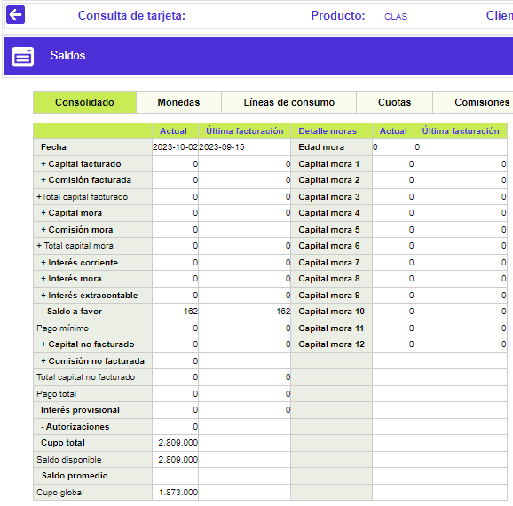
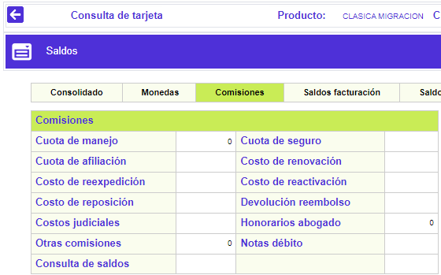
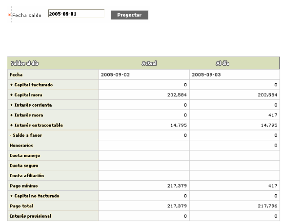

Saldos
En este formulario que se invoca desde la Consulta centralizada de tarjeta, la entidad puede conocer la información detallada de los saldos de la tarjeta, presentados o agrupados por diferentes criterios.
La opción ofrece varios enlaces a los formularios: Consolidado, Monedas, Líneas de crédito, Cuotas, Comisiones, Saldos facturación, Saldos concepto y Proyectar. Por defecto, cuando se ingresa al formulario, se despliega la información de Consolidado, la cual se presenta en columnas, tanto a la fecha actual como el dato que tenía la tarjeta en la fecha de la última facturación.

Descripción de campos
|
+Fecha |
Campo que muestra en formato YYYY-MM-DD la fecha a la que corresponden los datos desplegados. |
+Capital facturado |
Muestra el valor correspondiente para las fechas respectivas, del capital diferido cobrado al cliente dentro del pago mínimo. |
+Comisión facturada |
Campo que señala el monto de las comisiones cobradas al cliente dentro del pago mínimo. |
+Total capital facturado |
Indica la sumatoria del capital y las comisiones cobradas al cliente dentro del pago mínimo. |
+Capital mora |
Campo en el que se muestra el monto de capital no cubierto por el cliente en las facturaciones anteriores a la fecha indicada. |
+Comisión mora |
Este campo indica el monto de las comisiones no cubiertas por el cliente en las facturaciones anteriores. |
+Total capital mora |
Contiene la sumatoria del capital y las comisiones que no fueron cubiertas por el cliente en las facturaciones anteriores. |
+Interés corriente |
En este campo se indica el valor del interés de financiación que la entidad le cobra el cliente por los saldos pendientes a la fecha sobre los consumos efectuados. |
+Interés mora |
Campo que muestra el monto de los intereses de sanción generados por la entidad sobre las porciones de capital no cubiertas por el cliente en facturaciones anteriores. |
+Interés extracontable |
En este campo se indica el monto de los intereses que de acuerdo con la altura de mora o la calificación de la tarjeta, se deben causar sobre los saldos de la tarjeta. |
-Saldo a favor |
Despliega el monto a favor del cliente resultante de pagos hechos en exceso, reversiones de transacciones de consumos y ajustes entre otras posibles causas. |
Pago mínimo |
En este campo se indica el monto que el actor debe cancelar para cubrir la obligación y no incurrir en mora. |
+Capital no facturado |
Muestra el monto de los consumos diferidos que se encuentran pendientes de facturar y no han sido incluidos aún dentro del pago mínimo. |
+Comisión no facturada |
En este campo se indica el monto de las comisiones que aún no han sido incluidas dentro del pago mínimo de la tarjeta. |
Total capital no facturado |
Indica la sumatoria de los montos no incluidos dentro del pago mínimo |
Pago total |
Este campo contiene el valor total adeudado por el cliente a la entidad como resultado de las utilizaciones y consumos hechos con la tarjeta. |
Interés provisional |
Despliega los intereses calculados de manera provisional sobre transacciones que tengan la condición de condonar intereses el primer mes, de acuerdo con lo definido en transacciones por empresa. |
-Autorizaciones |
Este campo aplica solo para la fecha actual y señala el monto de las autorizaciones o aprobaciones otorgadas por la entidad y que se encuentran vigentes. |
Cupo total |
Contiene el monto total del cupo asignado a la línea principal de la tarjeta. |
Cupo disponible |
En este campo se indica el valor del cupo que puede ser utilizado por el cliente para efectuar consumos con la tarjeta. |
Saldo promedio |
Indica el promedio ponderado del saldo de la tarjeta en cada fecha que se incrementa con los consumos y disminuye por lo pagos efectuados. Se utiliza especialmente en el mercado norteamericano para calcular los intereses sobre el saldo promedio diario (ADB, average daily balance). |
Cupo global |
Campo que muestra el monto total asignado a la línea principal y las líneas independientes de la tarjeta. |
Edad mora |
Muestra la edad de mora que tenia la tarjeta en cada una de las fechas desplegadas. |
Capital mora 1... Capital mora 12 |
Campos que muestran el monto de capital no cubierto por el cliente en cada altura o edad de mora. |
Comisiones: Al invocar este enlace se despliega un nuevo formulario con el detalle de las comisiones cobradas al cliente.

Descripción de campos
Cuota de manejo / seguro / afiliación |
Este campo indica el monto de las comisiones cobradas al cliente por concepto de cuota de manejo, seguro y afiliación respectivamente. |
Costo de renovación / reexpedición / reactivación / reposición |
Campo que señala el monto de las comisiones cobradas al cliente por cada uno de los eventos, en caso que estos se hubieren presentado y de acuerdo con lo parametrizado para el producto al que pertenece la tarjeta. |
Devolución reembolso |
Este campo contiene la cantidad de unidades de la misma mercancía o premio que el tarjeta habiente reclamó o redimió. |
Costas judiciales |
Campo que registra el monto que se le cobra al cliente por concepto de gastos judiciales. |
Honorarios abogado |
En este campo se indica el monto de los honorarios de abogado cargados al cliente como resultado de los cobros jurídicos efectuados por la entidad. |
Otras comisiones |
Campo en el que se muestra el monto de otras comisiones no incluidas dentro de los items anteriores y que le han sido cobradas al cliente. |
Notas débito |
En este campo se indica el monto cargado al cliente por concepto de las notas débitos generadas a favor de la entidad. |
Proyectar: Al invocar este enlace se despliega un nuevo formulario en el cual, mediante una funcionalidad de un calendario, se puede estimar o hacer una proyección de los saldos de la tarjeta a una fecha posterior a la actual, sin embargo, debe ser inferior a la fecha de la próxima facturación..

Descripción de campos
|
Fecha |
Campo que muestra en formato YYYY-MM-DD la fecha actual y la fecha a la cual se está haciendo la proyección de los saldos. |
Capital facturado |
Muestra el valor correspondiente para las fechas respectivas, del capital diferido cobrado al cliente dentro del pago mínimo. |
Capital mora |
Campo en el que se muestra el monto de capital no cubierto por el cliente en las facturaciones anteriores a la fecha indicada. |
Interés corriente |
En este campo se indica el valor del interés de financiación que la entidad le cobra el cliente por los saldos pendientes a la fecha sobre los consumos efectuados. |
Interés mora |
Campo que muestra el monto de los intereses de sanción generados por la entidad sobre las porciones de capital no cubiertas por el cliente en facturaciones anteriores. |
Interés extracontable |
En este campo se indica el monto de los intereses que de acuerdo con la altura de mora o la calificación de la tarjeta, se deben causar sobre los saldos de la tarjeta. |
Saldo a favor |
Despliega el monto a favor del cliente resultante de pagos hechos en exceso, reversiones de transacciones de consumos y ajustes entre otras posibles causas. |
Honorarios |
Campo que señala el monto de los cargos que por concepto de honorarios se generan al cliente. |
Cuota manejo / seguro / afiliación |
Despliega el monto correspondiente a cuota de afiliación, seguro y manejo cargadas al cliente. |
Pago mínimo |
En este campo se indica el monto que el actor debe cancelar para cubrir la obligación y no incurrir en mora. |
Capital no facturado |
Muestra el monto de los consumos diferidos que se encuentran pendientes de facturar y no han sido incluidos aún dentro del pago mínimo. |
Pago total |
Este campo contiene el valor total adeudado por el cliente a la entidad como resultado de las utilizaciones y consumos hechos con la tarjeta. |
Interés provisional |
Despliega los intereses calculados de manera provisional sobre transacciones que tengan la condición de condonar intereses el primer mes, de acuerdo con lo definido en transacciones por empresa. |